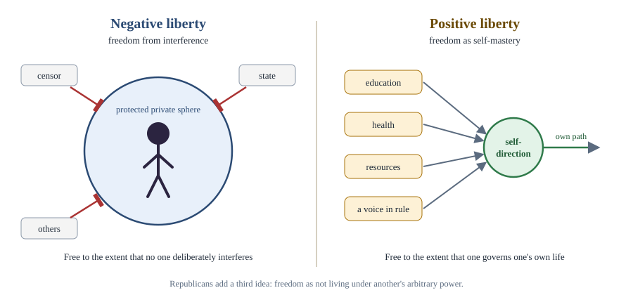

Chapter 4: Liberty¶
Freedom from, freedom to, and freedom as not being dominated
Learning outcomes
When you have finished this chapter you should be able to:
- explain why liberty is a contested concept and use MacCallum's triadic formula to clarify claims about it;
- distinguish negative and positive liberty as Berlin described them, and state the main worries about each;
- explain the republican idea of liberty as non-domination;
- state Mill's harm principle and his arguments for freedom of thought and expression;
- analyse paternalism, the offence principle and hate speech as limits on liberty;
- apply these ideas to concrete cases of state restriction.
4.1 Why liberty is contested¶
Almost everyone says they value freedom. Defenders of free markets and critics of them, conservatives and revolutionaries, all claim to stand for liberty. This is not simply hypocrisy. "Liberty" (or "freedom"; the two words are used interchangeably in this book) has several meanings, and people who use the word may be pointing at quite different things.
Consider three people who all say "I am not free".
- A journalist whose articles are censored by the government.
- A worker who is legally free to take any job, but is so poor that she must accept whatever is offered.
- A man addicted to gambling, who keeps betting although he wishes he could stop.
The journalist is prevented by another person's deliberate act. The worker faces no legal barrier but lacks the means to act. The gambler faces no external obstacle at all; his obstacle is inside him. Whether all three are really unfree, and whether the state should do anything about it, depends on which conception of liberty we adopt.
MacCallum's formula¶
In 1967 the philosopher Gerald MacCallum suggested a way to cut through much of the confusion. Every claim about freedom, he argued, has three parts, even if some are left unstated: an agent (X) is free from some constraint (Y) to do or become something (Z).
Disagreements about freedom are then disagreements about what counts as X (the individual? the "true self"? the community?), what counts as a constraint Y (only deliberate interference by others? also poverty, ignorance or inner compulsion?), and what counts as Z (any action at all? only worthwhile ones?). Using the formula, the journalist's case is "the journalist is not free from censorship to publish"; the worker's is "the worker is not free from poverty to choose her job"; the gambler's is "the gambler is not free from compulsion to live as he wishes".
Key idea
Any claim about freedom can be written as "X is free from Y to do or become Z". Rival theories of liberty disagree mainly about what counts as a constraint (Y) and who the free agent (X) is.
4.2 Negative liberty¶
In his lecture "Two Concepts of Liberty" (1958), the philosopher Isaiah Berlin distinguished two ideas that had dominated the history of political thought.
Negative liberty answers the question: what is the area within which a person is, or should be, left to do or be what he is able to do or be, without interference by other persons? I am free in the negative sense to the extent that no other person or group deliberately interferes with my actions. The wider the area of non-interference, the wider my freedom.
Negative liberty has a long history. Hobbes defined liberty as the absence of external impediments to motion; a free man is one who is not hindered from doing what he has the will to do. The classical liberal tradition (Locke, Benjamin Constant, Mill) saw the core of freedom as a protected private sphere where the individual may live as he chooses.
Three features are important.
- Only human interference counts. If I cannot fly, I lack the ability, not the freedom. If I am too poor to buy a book, the negative theorist says I lack the means to use my freedom, not the freedom itself. Berlin was clear that poverty is a great evil, but he insisted on calling it by its own name rather than "unfreedom", to avoid confusing different values.
- Freedom is a matter of opportunity, not exercise. I am free to vote whether or not I actually vote.
- Freedom can be traded against other values. Laws restrict freedom, but some restriction is necessary for security, justice or equality. The negative theorist asks only that we be honest that a loss of freedom is a loss, even when it is worth it.
Criticisms¶
- Formal freedom may be empty. Critics on the left argue that a freedom one cannot use is worth little. To tell a homeless person that she is free to rent a house is, they say, a mockery. Socialists and social liberals therefore argue that real freedom requires resources. Some negative theorists reply that poverty does involve interference: if I try to take food I cannot pay for, I will be stopped by the police, so lack of money is itself a lack of negative freedom (an argument made by G. A. Cohen).
- It may ignore domination. A slave whose master happens to be kind and never interferes has, on a strict negative view, a great deal of liberty. Yet the slave lives at the master's mercy. This criticism leads to the republican theory of section 4.4.
4.3 Positive liberty¶
Positive liberty answers a different question: what, or who, is the source of control or interference that can determine someone to do, or be, this rather than that? It is the freedom of self-mastery: being one's own master, governed by one's own reason and choices rather than by others or by one's passions. I am free in the positive sense when I am the author of my own life.
Positive liberty has been understood in several ways.
- Self-government by reason. For Rousseau and the German philosopher Immanuel Kant, to be free is to obey a law one has given oneself, not to follow every impulse. The gambler in section 4.1 lacks this kind of freedom.
- Collective self-government. A people is free when it governs itself, through democratic participation. This links positive liberty to democracy and to national independence.
- Capacity or power. The English idealist T. H. Green argued in 1881 that freedom is a positive power or capacity of doing or enjoying something worth doing or enjoying, in common with others. On this view the state promotes freedom when it provides education, regulates working hours and improves public health, because it gives people real capacities they would otherwise lack. Green's view helped to inspire the social liberalism of the early twentieth century (Chapter 11).
Berlin's warning¶
Berlin did not reject positive liberty, but he warned of its dangers. The idea of self-mastery invites a division of the self into a "higher", rational self and a "lower", empirical self of desires. It then becomes possible to say that people are not really free when they do what they want, but only when they do what their higher self, or reason, would choose. And if some authority (a party, a church, a state) claims to know what reason requires, it may coerce people in the name of their own freedom. Berlin pointed to Rousseau's phrase about forcing people to be free, and to the twentieth-century totalitarian regimes that claimed to liberate people while imprisoning them.
Defenders of positive liberty reply that Berlin described a perversion of the idea, not the idea itself. Valuing people's capacity to lead self-directed lives, they say, gives the state reason to provide education and resources, not to impose a doctrine. And negative liberty can be abused too: the freedom of the strong from regulation can mean the domination of the weak.
| Negative liberty | Positive liberty | |
|---|---|---|
| Central question | How large is the area in which I am left alone? | Who governs me, and am I my own master? |
| Constraint | Deliberate interference by other people | Interference, but also lack of capacity, ignorance, inner compulsion |
| Typical defenders | Hobbes, Constant, Mill (mainly), Berlin, Hayek | Rousseau, Kant, Hegel, Green, many socialists |
| Implication for the state | Protect a private sphere; limit state action | Enable self-development and self-government; may require state action |
| Main worry | Formal freedoms may be empty for the poor | Others may coerce people in the name of their "true" freedom |
Table 4.1. Berlin's two concepts of liberty.

4.4 Liberty as non-domination¶
A third view, revived from the Roman and early modern republican tradition by historians and philosophers such as Quentin Skinner and Philip Pettit (Republicanism, 1997), holds that freedom means not being subject to the arbitrary will of another. What makes a slave unfree is not that the master interferes, but that the master could interfere at will, without having to answer to anyone. The slave of a kind master is still unfree; he must flatter, anticipate and appease.
On this view:
- Domination without interference is possible (the kind master, an employer who could fire a worker at whim but chooses not to, a husband who in law controls his wife's property but does not use the power).
- Interference without domination is also possible: a law that is made through fair democratic processes and that tracks the interests of those it governs interferes with people but does not dominate them, because it is not arbitrary.
Republicans therefore emphasise the rule of law, the dispersal of power, the contestability of decisions (people must be able to challenge them), and the protection of vulnerable people from dependence on others' goodwill. Critics ask whether "arbitrary" can be defined without relying on a prior theory of justice, and whether non-domination is really a distinct idea of freedom or a combination of negative liberty with other values.
Worked example 4.1: Three views of one case
Situation. A domestic worker lives in her employer's house. She is paid, is not mistreated, and is allowed to go out on Sundays. But the employer holds her passport, and she could be dismissed and deported at any moment without reason or appeal.
Negative view. Her day-to-day freedom is restricted (limited time out), but on many days there is little active interference. The holding of her passport is a clear interference with her freedom to leave.
Positive view. Her capacity to direct her own life, develop her abilities and take part in her community is very limited.
Republican view. Even on days when nothing bad happens, she is dominated: she lives at the mercy of the employer's will, which is subject to no check. Republicans would recommend legal protections (the right to keep one's own documents, protection against arbitrary dismissal) that reduce domination, even if they add some regulation.
4.5 Mill and the harm principle¶
The most famous defence of individual liberty in English is John Stuart Mill's On Liberty (1859). Mill was worried less about tyrannical kings than about the tyranny of the majority, and especially the social tyranny of prevailing opinion and custom, which could crush individuality more thoroughly than any law. He proposed what he called one very simple principle, now known as the harm principle:
Mill, On Liberty (1859), Chapter 1
"The only purpose for which power can be rightfully exercised over any member of a civilised community, against his will, is to prevent harm to others. His own good, either physical or moral, is not a sufficient warrant."
Self-regarding and other-regarding conduct¶
Mill distinguished conduct that concerns only oneself (or others only with their free consent) from conduct that affects the interests of others. Over the first, the individual is sovereign: society may advise, persuade or avoid him, but may not compel him. Over the second, society may intervene if it would do more good than harm. Mill applied the principle only to adults in a mature society; it did not, he said, apply to children or, in a notorious passage reflecting the imperial assumptions of his time, to what he called backward societies.
Critics have long asked whether any conduct is purely self-regarding. If I ruin my health, my family suffers and public health services bear the cost. Mill's answer was that such harms are indirect and contingent; society should punish the definite breach of a duty to others (a father who fails to support his children because he drinks), not the self-regarding vice itself.
Why Mill valued liberty¶
Mill was a utilitarian, but he grounded liberty in utility "in the largest sense, grounded on the permanent interests of man as a progressive being". Liberty allows individuality to flourish: people develop their faculties by making their own choices, and a society with varied "experiments of living" discovers better ways of life. He valued originality and feared a society of conformity in which people ask only what is suitable to their position.
The argument for freedom of thought and discussion¶
Mill's second chapter gives a powerful argument for near-absolute freedom of opinion. Silencing an opinion is wrong in every case.
- The opinion may be true. To suppress it assumes our own infallibility.
- It may be partly true. Prevailing opinion is rarely the whole truth; only the collision of opinions supplies the rest.
- Even if it is false, challenge keeps the truth alive. Unchallenged, true beliefs are held as dead dogma, as prejudice, without understanding of their grounds.
- The meaning of the doctrine itself will be lost or weakened if it is never defended.
Mill distinguished opinion from incitement. The opinion that corn dealers starve the poor may be freely published in the press, he wrote, but may justly be punished when delivered orally to an excited mob assembled before a corn dealer's house.
Worked example 4.2: Applying the harm principle
Cases. (a) A law requiring motorcyclists to wear helmets. (b) A law banning the sale of alcohol to under-eighteens. (c) A law punishing a newspaper for publishing an article arguing that the country's economic policy is disastrous.
Analysis. (a) The main harm prevented is to the rider, so a strict Millian would object: it is paternalistic (section 4.6). Some argue that crashes impose costs on others (medical services, family), but Mill would call these indirect. (b) Mill's principle does not apply to children, so restricting their access is consistent with it. (c) This punishes the expression of an opinion and is precisely what Mill's argument for free discussion condemns; there is no harm to others in the relevant sense, only disagreement.
4.6 Limits of liberty: paternalism, offence and hate speech¶
Paternalism¶
Paternalism is interference with a person's liberty for his or her own good. Mill rejected it for adults, with a famous exception: if someone is about to cross a bridge known to be unsafe and there is no time to warn him, an official may seize him and turn him back, since liberty consists in doing what one desires, and he does not desire to fall into the river. Philosophers distinguish:
- soft paternalism, which intervenes only to check that conduct is voluntary and informed (the bridge case), and is compatible with respect for autonomy; and
- hard paternalism, which overrides fully informed, voluntary choices for the person's good (banning a dangerous sport for willing adults).
More recently, behavioural economists Richard Thaler and Cass Sunstein have proposed libertarian paternalism or "nudging": arranging choices (for example, making pension saving the default option, which people can opt out of) so that people tend to choose what benefits them, without forbidding anything. Critics worry that nudges manipulate people and bypass their reason.
The offence principle¶
Should the law prevent conduct that does not harm others but deeply offends them, such as public nudity or obscene displays? The American philosopher Joel Feinberg, in a four-volume study The Moral Limits of the Criminal Law (1984–1988), proposed an offence principle alongside the harm principle, but hedged it carefully: the offence must be serious, widespread and hard to avoid, and must be weighed against the value of the conduct and the ease with which offended people can avoid it. Offence caused by the mere knowledge that others are doing something in private would not count.
Legal moralism¶
Legal moralism holds that the law may prohibit conduct simply because it is immoral, even if no one is harmed. In a famous debate in the late 1950s and 1960s, the English judge Lord Devlin argued that a society is held together by a shared morality and may protect it by law; H. L. A. Hart replied, in Mill's spirit, that private conduct between consenting adults that harms no one is not the law's business, and that shared morality can change without society collapsing. The debate arose from proposals to decriminalise homosexual conduct in Britain.
Hate speech¶
Many democracies restrict hate speech: expression that attacks or demeans people on the basis of characteristics such as religion, race, caste, ethnicity or sexuality. Arguments for restriction hold that such speech harms its targets (by intimidating them, damaging their standing as equal members of society and silencing them) and can incite discrimination or violence. Arguments against warn that vague laws can be used to silence unpopular political or religious views, that the best answer to bad speech is more speech, and that the state is not a trustworthy judge of what is offensive. Constitutions strike different balances. The First Amendment to the United States Constitution is interpreted to protect most hateful speech unless it incites imminent lawless action; many European countries and India permit wider restrictions. Article 19(2) of the Constitution of India allows "reasonable restrictions" on freedom of speech and expression on grounds that include public order, decency or morality, and incitement to an offence.
| Principle | Liberty may be restricted to prevent ... | Associated with |
|---|---|---|
| Harm principle | Harm to others | Mill |
| Offence principle | Serious offence to others | Feinberg |
| Paternalism | Harm to oneself | Contested; soft forms widely accepted |
| Legal moralism | Immorality as such | Devlin |
Table 4.2. Principles for limiting liberty.
Worked example 4.3: A ban on a protest march
Situation. A city bans a march by a group that wants to protest against the presence of a religious minority in the area, on the ground that the march will pass through the minority's neighbourhood and is likely to lead to violence.
Analysis. A strict negative-liberty view sees a serious restriction of freedom of assembly and expression that requires strong justification. Applying Mill's distinction between opinion and incitement, the decisive questions are whether the march would amount to incitement in a volatile setting (like the speech before the corn dealer's house) and whether lesser measures, such as a different route, would prevent harm. A republican might stress that the march aims to intimidate a vulnerable group and so threatens its members with domination. A defender of hate-speech laws would ask whether the march attacks the minority's standing as equal citizens. Many legal systems would allow the authorities to change the route or impose conditions rather than ban the march outright, since a narrower restriction protects others while limiting liberty less.
4.7 Liberty and other values¶
Berlin ended "Two Concepts of Liberty" with a defence of value pluralism: the view that human values are many, that they can genuinely conflict, and that there is no single master value by which all conflicts can be settled. Liberty may conflict with equality, security, justice or community, and sometimes we must sacrifice some of one value for another. What we should not do, he argued, is pretend that nothing is lost, for example by redefining liberty so that whatever the state demands becomes "true freedom".
Others argue that the conflicts are less deep than they look. Ronald Dworkin argued that liberty, properly understood as the freedom to use one's fair share of resources as one chooses, cannot really conflict with equality properly understood. Republicans argue that well-designed laws increase freedom by reducing domination. The relation between liberty and equality is a central theme of the next two chapters.
Summary
- Liberty is contested; MacCallum's formula, "X is free from Y to do or become Z", shows that rival views disagree about the agent, the constraints and the goals.
- Berlin's negative liberty is the absence of deliberate interference by others; positive liberty is self-mastery or self-government. Berlin warned that positive liberty can be used to justify coercion in the name of people's "true" selves; critics reply that negative liberty can leave freedoms empty for those without means.
- Republicans (Skinner, Pettit) define liberty as non-domination: not being subject to the arbitrary will of another.
- Mill's harm principle permits interference with adults only to prevent harm to others; he defended individuality and near-absolute freedom of opinion on four grounds, while distinguishing opinion from incitement.
- Other possible grounds for limiting liberty are paternalism (soft or hard), the offence principle (Feinberg) and legal moralism (Devlin, opposed by Hart). Hate speech raises hard questions on which democracies differ.
- Berlin's value pluralism holds that liberty can conflict with other values; others argue the conflicts are less deep.
4.8 Exercises¶
Exercise 1
Use MacCallum's formula to express each claim: (a) "Under the old regime, people were not free to travel abroad." (b) "Without free schooling, poor children are not really free."
Answer
(a) People (X) were not free from state prohibition (Y) to travel abroad (Z). (b) Poor children (X) are not free from lack of education and resources (Y) to develop their abilities and choose their path in life (Z). The second claim treats lack of resources as a constraint, which a strict negative theorist would call a lack of means rather than of freedom.
Exercise 2
Why did Berlin think positive liberty could be dangerous? How might a defender of positive liberty reply?
Answer
Positive liberty as self-mastery divides the self into a higher, rational self and a lower self of desires. An authority that claims to know what the higher self wants may then coerce people while claiming to free them, as Rousseau's "forced to be free" suggests and totalitarian regimes practised. A defender can reply that this is an abuse, not a consequence, of the idea: valuing people's capacity to direct their own lives supports providing education and resources and respecting their choices, not imposing a doctrine.
Exercise 3
Explain why a republican would say that the slave of a kind master is unfree, although the master never interferes.
Answer
For republicans freedom is non-domination. The slave lives under the master's arbitrary power: the master could interfere at any time, without answering to anyone. The slave must therefore watch, flatter and appease, and his good fortune depends wholly on the master's goodwill. Absence of actual interference does not remove the domination.
Exercise 4
State Mill's four reasons for allowing freedom of opinion even when the opinion seems false.
Answer
(1) The opinion may be true, and to suppress it assumes infallibility. (2) It may be partly true, and only collision of opinions supplies the whole truth. (3) Even a true received opinion, unchallenged, will be held as dead dogma, without understanding of its grounds. (4) The meaning of the doctrine will be weakened or lost if it is never defended.
Exercise 5
Distinguish soft from hard paternalism and give an example of each.
Answer
Soft paternalism interferes only to ensure that a choice is voluntary and informed, for example stopping someone who is about to step onto an unsafe bridge without knowing it, or requiring a cooling-off period before a risky contract. Hard paternalism overrides choices that are fully voluntary and informed, for the person's own good, for example banning adults from a dangerous sport they understand and want to take part in.
Exercise 6
What was the Hart–Devlin debate about, and what position did each take?
Answer
It concerned whether the law may enforce morality as such, arising from proposals to decriminalise private homosexual conduct in Britain. Devlin argued that a society is held together by shared morality and may use law to protect it. Hart argued, following Mill, that private conduct between consenting adults that harms no one is not the law's business, and that a society's morality can change without the society disintegrating.
Exercise 7
Give one argument for and one against laws restricting hate speech.
Answer
For: hate speech harms its targets: it intimidates them, undermines their standing as equal citizens, can silence them, and may incite discrimination or violence. Against: such laws can be vague and abused to silence unpopular political or religious opinions; the state is not a neutral judge of offence; and counter-speech may be a better remedy.
4.9 Quiz¶
Check yourself: liberty
Exercise 1
Who distinguished negative and positive liberty in a lecture of 1958?
- J. S. Mill
- Isaiah Berlin
- T. H. Green
- Philip Pettit
Answer
Isaiah Berlin
Exercise 2
Liberty as non-domination is associated with which tradition?
- Utilitarian
- Republican
- Marxist
- Conservative
Answer
Republican
Exercise 3
MacCallum: X is free from ___ to do or become Z.
Answer
Y
Exercise 4
In which year was On Liberty published?
- 1789
- 1859
- 1905
- 1958
Answer
1859
Exercise 5
According to Mill's harm principle, power may be exercised over an adult against his will only to
- make him better off
- prevent harm to others
- enforce shared morality
- prevent offence
Answer
prevent harm to others
Exercise 6
Match each thinker with an idea.
| A | B |
|---|---|
| T. H. Green | Legal moralism |
| Feinberg | Nudging |
| Devlin | Freedom as a positive power or capacity |
| Thaler and Sunstein | The offence principle |
Answer
T. H. Green — Freedom as a positive power or capacity; Feinberg — The offence principle; Devlin — Legal moralism; Thaler and Sunstein — Nudging
Exercise 7
Stopping someone from crossing a bridge they do not know is unsafe is an example of
- hard paternalism
- soft paternalism
- legal moralism
- the offence principle
Answer
soft paternalism